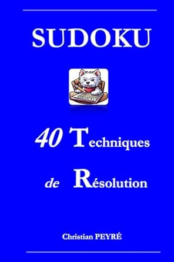

Vous souhaitez progresser dans la résolution des grilles Sudoku ? Ma chaîne Domino33, avec plus de 80 vidéos en ligne, est entièrement consacrée à cette discipline. Elle est faite sur mesure pour vous, débutants ou confirmés.
Vous allez apprendre et maîtriser progressivement les techniques de résolution de SUDOKU grâce à Sudoku Solver Pro, qui permet de les étudier sur le plan théorique et pratique. Son graphisme particulièrement pédagogique et sa puissance de calcul permettent de résoudre toutes les grilles de niveaux 5 à 12 et +.
Pour cela, il applique les trois types de techniques de résolution suivantes :
Ce Memento s'adresse à tous les passionnés, des débutants aux expérimentés, qui souhaitent progresser dans la résolution de SUDOKU.
Vous trouverez sous forme de fiches, 40 techniques de résolution qui vous expliquent comment solutionner des grilles des plus complexes jusqu'aux niveaux les plus élevés (9 et +) !
